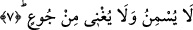

halde bunları aynı kişinin çeşitli ameller karşılığı yiyecekler olarak almak mümkündür.
Dari’ Kâşânî’nin dediği gibi dikenli bitki, muğalata, hilaf, safsata gibi faydasız
ilimlere ve buna benzer diğer faydasız şeylere, ğıslîn ise tabii şehvetlere işâret
etmektedir. Ğıslin tabii şehvetlere işâret ettiği için cehennemliklerin bedenlerinden
akacaktır. Çünkü her şehvetin bir sızıntısı ve teri vardır. Her kap da içinde ne varsa
ancak onu dışarı sızdırır. Zakkum’a gelince bu onların peygamberlere ve evliyaya dil
uzattıklarına, onların dinlerine kötü söz söylediklerine, alaya aldıklarına işâret
etmektedir. Bu cehennemlikler onları alaya alarak bundan zevk duyuyorlardı. Nitekim
Allah bir âyet-i kerimede bu gerçeğe şöyle işâret buyuruyor: “Âilelerine
döndüklerinde (alaylarından dolayı) keyiflenerek dönerlerdi.” (Mutaffifin, 83/31)
Yani yaptıkları alay, maskaralık ve buna benzer şeylerden zevk alarak âilelerine
dönerlerdi.
Burada adı geçen üç yiyeceğin bir kişiye yedirileceği varsayımına göre düşünürsek bu
takdirde zakkum misâfire ilk getirilen ikram, dari’ ikramın ardından yemek, ğıslin ise
onlara verilecek hamîm/kaynar su gibi içecek olmuş olur. Tabi gerçek ilim ve bilgi,
Allah’ın katındadır.
7. O ise ne besler ne de açlığı giderir.
Yani bu dari’ dikeni dünya yiyecekleri gibi ne semirtir ne de açlığı giderir. Bu sâdece
-onların açlık sıkıntılarını gidermeksizin- yemek zorunda kaldıkları bir nesneden
başkası değildir. Onların semirmemesi ve doymaması buna olan yeteneklerinin var
olduğundan, o dikenin bunları sağlamadığından değildir. Tam tersine onların doymaya
ve
semirmeye
yetenekleri
olmadığından
dikenin
de
böyle
bir
faydayı
sağlamayacağından dolayıdır. Çünkü onların açlıkları ve susuzlukları bizim bildiğimiz
açlık ve susuzluk kabilinden değildir. Bir başka ifâdeyle insanın metabolizmasının
arzuladığı ve vücutta bazı unsurların azalmasından dolayı insanın başına gelen bir açlık
hâli değildir. Bilindiği üzere insan vücudu bazı maddeler eksildiğinde yemeye ve
içmeye ihtiyaç duyar ve bunları yiyip, içtiğinde bir lezzet alır. Dolayısıyla onları yiyip,
içtiğinde başka bir şey arzulamaz ve yediği, içtiği maddelerden bunların sindirilmesi
sonucu kuvvet elde eder ve semirir. Oysa kâfirlerin orada acıkma ve susamaları böyle
değildir. Tam tersine onların acıkmaları ateşin içlerinde tutuşturulduğu esnâda bu alevi
karınlarından çıkarmak için yoğunluğu fazla olan herhangi bir maddeyi içerlerine sokma
mecburiyetinde kalmalarından ibarettir. Herhangi bir yiyecek maddesine ihtiyaç duymak
ve bunu yiyince lezzet almak, mideye indirince başka bir şeyi arzulamamak, yiyip
içtiğinden kuvvet almak gibi olgulara gelince heyhat bunlar onlardan ne kadar uzaktadır.
Yine onların susuzluğu da dikeni yediklerinde ve bu diken karınlarında alev tutuşmuş